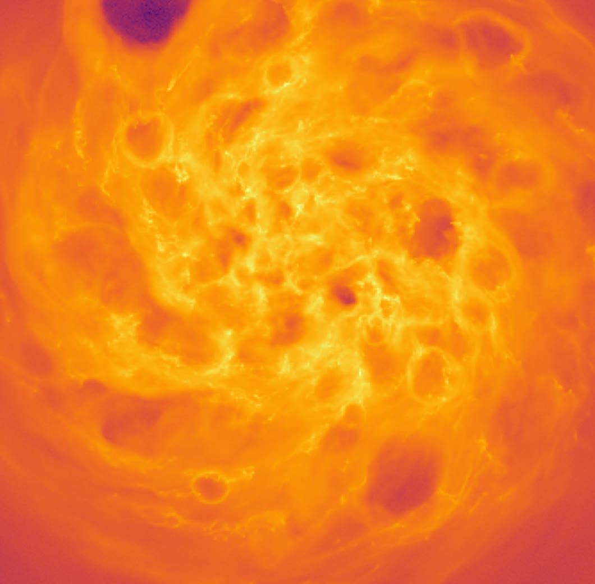

Flagship · Stella
Multiphase galactic winds, star by star
With Stella, every star in a galaxy is followed individually, with its own stellar evolution, winds, radiation and supernova. At about one solar mass resolution I can watch the hot, warm and cold phases of a wind being launched, and measure how much mass, energy and metals each one carries. The image shows a WLM-mass dwarf galaxy whose interstellar medium has been carved into bubbles by individual supernovae.
I use these simulations, from dwarf galaxies to the LMC and tall-box patches of denser discs, to test how winds depend on the variety of supernova outcomes, on runaway stars and on turbulent metal mixing, and to build analytic wind models that observers can use.